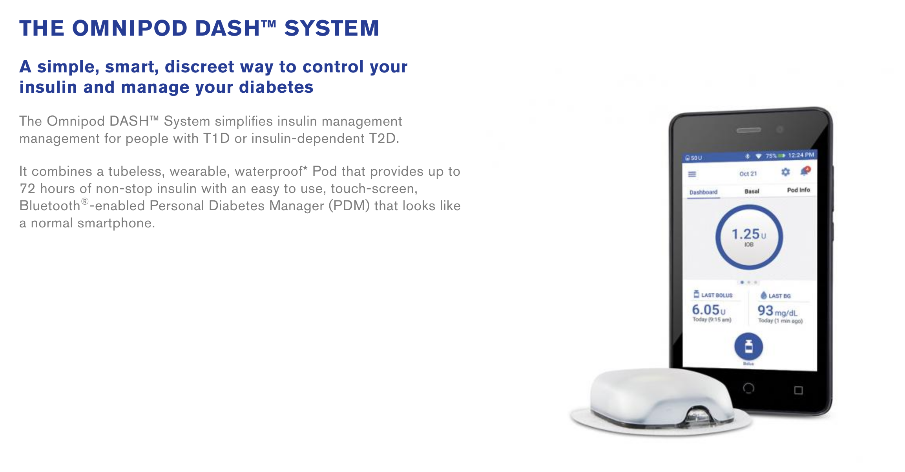

Omnipod Insulet : Eros
Rappel et conditions générales
Avec le travail de la communauté DIY, l’Omnipod de Insulet est désormais compatible avec Loop. L’utilisation des pods Eros n’est pas approuvé par Insulet. N’appelez pas Insulet afin d’obtenir de l’aide pour monter, mettre en place, ou faire fonctionner Loop. Ce projet n’est pas approuvé par la FDA, et vous l’utilisez à vos propres risques. Veuillez lire tous les documents pour vous vous familiariser avec Loop avant de commencer.
Loop avec Omnipod est toujours sous développement.Loop avec Omnipod est considéré comme une “branche”, une version, expérimental. Ceux utilisant cette branche expérimentale devraient s’attendre à ce qu’il y ait des problèmes et doivent être prêts à participer au développement en signalant et captant tout problème observé. Cette branche sera mise à jour d’une façon plus régulière qu’une branche stable, pour réparer des bogues. Par conséquent, les utilisateurs contrôleurs devraient être prêts et capables de mettre à jour régulièrement leur application Loop pour avoir les réparations des bogues.
Eros
Loop est compatible avec ces pods.Les pods Eros ont débuté sur le marché aux États Unis en 2013 et continue à être venus par Insulet. De nos connaissances, il n’y aurait aucune intention ou timeline annoncés pour la rupture des poids Eros pour les clients existants. Insulet n’appelle plus ces pods “Eros” spécifiquement, il utilise simplement le terme “système Omnipod”.
Pour être clair, voici une image du site web d’Insulet :

Le system Eros utilise le PDM que nous connaissons tous.
DASH
Loop n’est pas compatible avec les pods DASH. Ils ne sont pas encore disponibles en France.
Insulet a annoncé le système DASH comme remplacement potentiel des pods Eros. Il y a déjà un petit groupe d’utilisateurs qui a reçu les DASH lors d’un lancement limité, avec un deuxième lancement plus accessible à la voie publique anticipé en 2019. Le système DASH utilise le nouveau PDM, qui est plus fin et possède son propre système Bluetooth avec le pod (contrairement aux signaux radios de nos jours). Loop ne sera pas compatible avec le système DASH.
